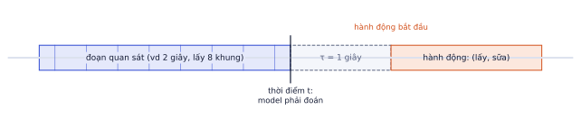
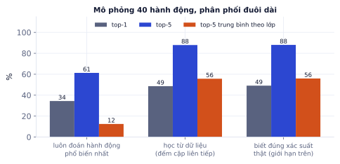
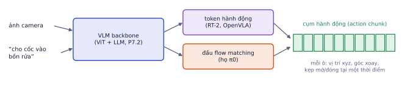

Bài 1
Lấy mẫu khung hình
tính tayĐoạn video 10 giây, 30 fps, lấy 8 khung cách đều.
Lời giải
300 khung, cách 37,5 khung lấy một. 8 × 196 = 1.568 token; gộp 2 khung một tubelet giảm còn 784.
Video thêm chiều thời gian: không chỉ "trong ảnh có gì" mà "chuyện gì đang xảy ra và sắp xảy ra". Video quay từ góc nhìn người thực hiện (egocentric) là dữ liệu chính để dạy robot làm việc nhà, và Vision-Language-Action model nối thị giác, ngôn ngữ với hành động điều khiển robot. Bài này là phần nâng cao, gắn với dự án EPIC-KITCHENS và hướng VLA bạn quan tâm. Có mô phỏng cho thấy vì sao dự đoán hành động đo bằng top-5 trung bình theo lớp.
Robot làm việc trong nhà cần hiểu chuỗi hành động ("mở tủ lạnh, lấy sữa, đóng tủ") và đoán bước tiếp theo, chứ không chỉ nhận diện vật thể. Video egocentric là nguồn dữ liệu rẻ nhất cho kiến thức đó, và VLA là hướng nghiên cứu nóng nhất của robot học hiện nay. Dự án EPIC-KITCHENS của bạn là đúng bài toán "đoán hành động tiếp theo", và nền tảng để hiểu các bài báo VLA.
Video 6 giây ở 25 khung hình/giây là 150 ảnh. Mỗi ảnh qua ViT-B/14 ở 224 là 256 token, cả video là 38.400 token: quá nhiều. Ba cách phổ biến:
| Cách | Làm gì | Ưu | Nhược |
|---|---|---|---|
| Lấy mẫu khung hình | chọn 8–32 khung | đơn giản, giảm chi phí tuyến tính | bỏ qua chuyển động giữa các khung |
| Đặc trưng từng khung + model thời gian | encoder ảnh (CLIP, DINOv2) trên từng khung, rồi Transformer nhỏ trên chuỗi đặc trưng | rẻ, trích đặc trưng một lần dùng mãi, baseline tốt | không thấy chuyển động tinh |
| Model video đầu-cuối | cắt video thành tubelet (mảnh không gian × vài khung) rồi Transformer như ViT (ViViT, VideoMAE) | học được chuyển động | đắt, cần nhiều dữ liệu |
Cách chuẩn (từ TSN): chia video thành k đoạn bằng nhau, lấy một khung trong mỗi đoạn. Khi train lấy ngẫu nhiên trong đoạn (thêm đa dạng, như data augmentation); khi đánh giá lấy giữa đoạn (để kết quả lặp lại được).
import numpy as np
def sample_frames(n_frames, k, train, rng=np.random.default_rng(0)):
edges = np.linspace(0, n_frames, k + 1) # k đoạn bằng nhau
if train:
return [int(rng.uniform(edges[i], edges[i + 1])) for i in range(k)]
return [int((edges[i] + edges[i + 1]) / 2) for i in range(k)]
sample_frames(150, 16, train=False) # [4, 14, 23, 32, 42, 51, 60, 70, 79, 89, 98, 107, 117, 126, 135, 145]
[4, 14, 23, 32, 42, 51, 60, 70, 79, 89, 98, 107, 117, 126, 135, 145]
Video 150 khung, lấy 16 khung, mỗi khung 256 token (ViT mảnh 14 ở 224):
Cách 3 là lý do dự án EPIC-KITCHENS trích đặc trưng trước và lưu ra đĩa: đọc và giải mã video là phần chậm nhất, chỉ nên làm một lần.
EPIC-KITCHENS-100 quay người nấu ăn trong bếp nhà họ bằng camera đeo đầu: khoảng 100 giờ, 45 căn bếp, khoảng 90 nghìn đoạn hành động có chú thích dạng (động từ, danh từ): (mở, tủ lạnh), (cắt, cà chua). Có 97 động từ và 300 danh từ. Ego4D lớn hơn nhiều (khoảng 3.600 giờ), đa dạng hoạt động ngoài bếp.
Đặc điểm khó của dữ liệu egocentric:

Anticipation khó hơn nhiều vì tương lai không chắc chắn: sau khi mở tủ lạnh, người ta có thể lấy sữa, lấy rau, hoặc đóng tủ lại. Ngay cả model hoàn hảo cũng không thể đúng mọi lần.
Mô phỏng: chuỗi hành động sinh từ một chuỗi Markov 40 hành động với phân phối đuôi dài (mỗi hành động thường dẫn tới 3–6 hành động tiếp theo, độ bất định trung bình khoảng 2,6 bit). Train trên 400 chuỗi, đo trên 200 chuỗi khác, ba "model":

| Model | Top-1 | Top-5 | Top-5 trung bình theo lớp |
|---|---|---|---|
| Luôn đoán phổ biến nhất | 34% | 61% | 12% |
| Đếm cặp liên tiếp từ dữ liệu train | 49% | 88% | 56% |
| Biết xác suất thật (giới hạn trên) | 49% | 88% | 56% |
Hai bài học:
Rò rỉ tương lai. Lấy khung hình trong khoảng τ (sau thời điểm t) hoặc trong chính đoạn hành động để train anticipation thì model "nhìn thấy" đáp án, điểm val cao vô lý. Kiểm tra kỹ chỉ số khung: mọi khung phải kết thúc trước thời điểm bắt đầu hành động trừ τ.
Baseline mạnh và rẻ cho dự án: đặc trưng CLIP/DINOv2 của 8 khung trong đoạn quan sát → Transformer encoder nhỏ trên chuỗi 8 vector (có embedding vị trí theo thời gian) → hai đầu phân loại: động từ (97 lớp) và danh từ (300 lớp). Hành động (động từ, danh từ) được chấm bằng cách kết hợp hai dự đoán. Bài tập code yêu cầu bạn viết đúng model này.
Xử lý đuôi dài khi train: trọng số lớp trong cross-entropy (lớp hiếm trọng số cao hơn), hoặc lấy mẫu cân bằng hơn.
VLA lấy một VLM (P7.2) và dạy nó xuất ra hành động robot thay vì chỉ chữ:

1. Token rời rạc (RT-2, OpenVLA). Mỗi chiều hành động (x, y, z, ba góc xoay, kẹp) được chuẩn hóa về [−1, 1] rồi chia thành 256 khoảng; mỗi khoảng là một token. LLM sinh hành động như sinh chữ.
Một chiều hành động có giá trị 0.37, chia [−1, 1] thành 256 khoảng:
2. Liên tục bằng flow matching (họ π0). Một "đầu hành động" nhỏ nhận đặc trưng từ VLM, sinh vector hành động liên tục bằng flow matching (P5.6), vài bước Euler. Mượt hơn và chính xác hơn token rời rạc, đặc biệt cho tay robot nhiều khớp.
Thay vì chạy model mỗi bước điều khiển, VLA sinh cụm hành động (action chunk): ví dụ 30 hành động liên tiếp ở tần số điều khiển 15 Hz phủ 2 giây chuyển động. Model chạy ít lần hơn (VLM lớn thì chậm), và chuyển động mượt hơn vì cả cụm được sinh nhất quán.
| Nguồn dữ liệu | Vai trò |
|---|---|
| Trình diễn robot (Open X-Embodiment, DROID) | cặp (ảnh, lệnh, hành động) thật, đắt để thu thập |
| Video người làm việc (egocentric) | kiến thức về vật thể và trình tự tác vụ, không có hành động robot |
| Dữ liệu ảnh–chữ của VLM | hiểu ngôn ngữ và nhận diện vật thể |
Thách thức chính: dữ liệu robot đắt và ít; chuyển giao giữa các loại robot (cánh tay khác nhau có không gian hành động khác nhau); đánh giá phải chạy trên robot thật hoặc mô phỏng (không có "tập test" tĩnh như ảnh); và an toàn khi robot chạy cạnh người.
Ghi nhớ: mảnh nào bạn đã học đều xuất hiện ở đây: ViT và CLIP (thị giác), Transformer (chuỗi thời gian), LLM (hiểu lệnh), flow matching (sinh hành động). VLA là nơi chúng hội tụ.
| Chủ đề | Ý chính |
|---|---|
| Biểu diễn video | lấy mẫu theo đoạn; đặc trưng từng khung + Transformer thời gian; hoặc tubelet |
| Egocentric | camera đeo đầu, (động từ, danh từ), đuôi dài, bếp chưa thấy |
| Anticipation | đoán hành động sau τ giây; tương lai bất định; top-5 trung bình theo lớp |
| VLA | VLM + đầu hành động (token rời rạc hoặc flow matching), sinh theo cụm |
| Thuật ngữ | Nghĩa |
|---|---|
| egocentric | góc nhìn thứ nhất, camera đeo trên người |
| action recognition / anticipation | nhận diện / dự đoán hành động |
| τ (anticipation time) | khoảng cách từ lúc quan sát xong tới lúc hành động bắt đầu |
| tubelet | mảnh không gian × thời gian của video |
| TSN sampling | lấy một khung trong mỗi đoạn bằng nhau |
| mean class recall | recall trung bình theo lớp |
| long-tail | phân phối đuôi dài |
| VLA | Vision-Language-Action model |
| action tokenization | rời rạc hóa hành động thành token |
| action chunk | cụm hành động sinh một lần |
| embodiment | loại thân robot (cánh tay, tay kẹp, khớp) |
Đoạn video 10 giây, 30 fps, lấy 8 khung cách đều.
300 khung, cách 37,5 khung lấy một. 8 × 196 = 1.568 token; gộp 2 khung một tubelet giảm còn 784.
5 mẫu test, vị trí của đáp án đúng trong danh sách dự đoán: 1, 7, 3, 2, không có.
Top-1: chỉ mẫu đầu đúng, 1/5. Top-5: các mẫu có vị trí 1, 3, 2 nằm trong top-5: 3/5. Với dự đoán tương lai mơ hồ, top-5 công bằng hơn top-1.
Chọn một bài báo VLA (ví dụ OpenVLA hoặc π0). Tóm tắt trong 1 trang: đầu vào, đầu ra, hành động được biểu diễn thế nào, dữ liệu train, cách đánh giá, kết quả chính, và một hạn chế tác giả thừa nhận.
Một bản tóm tắt tốt trả lời đủ 7 ý và có số liệu cụ thể từ bảng kết quả. Ví dụ khung:
Viết model anticipation đơn giản: đầu vào là chuỗi đặc trưng CLIP của T khung (đã trích sẵn, shape B×T×512), một Transformer encoder nhỏ, hai đầu phân loại động từ và danh từ.
import torch, torch.nn as nn
class Anticipator(nn.Module):
def __init__(self, n_verbs, n_nouns, d_in=512, d=256, T=8, layers=2):
super().__init__()
self.proj = nn.Linear(d_in, d)
self.pos = nn.Parameter(torch.zeros(1, T + 1, d))
self.cls = nn.Parameter(torch.zeros(1, 1, d))
enc = nn.TransformerEncoderLayer(d, nhead=4, dim_feedforward=4 * d, batch_first=True, norm_first=True)
self.encoder = nn.TransformerEncoder(enc, layers)
self.verb, self.noun = nn.Linear(d, n_verbs), nn.Linear(d, n_nouns)
def forward(self, feats): # feats: (B, T, d_in)
x = self.proj(feats)
x = torch.cat([self.cls.expand(len(x), -1, -1), x], 1) + self.pos
h = self.encoder(x)[:, 0]
return self.verb(h), self.noun(h)
m = Anticipator(n_verbs=97, n_nouns=300)
v, n = m(torch.randn(4, 8, 512))
print(v.shape, n.shape)
torch.Size([4, 97]) torch.Size([4, 300])
Dùng: biểu diễn video: lấy mẫu đều toàn video, lấy mẫu theo đoạn có ngẫu nhiên khi train (kiểu TSN), số khung hình và chi phí.
Viết hai hàm chọn 8 khung hình từ video có n khung: deu(n, k) lấy khung ở giữa k đoạn bằng nhau (dùng khi đánh giá); theo_doan(n, k, rng) chia k đoạn bằng nhau rồi lấy ngẫu nhiên một khung trong mỗi đoạn (dùng khi train, như một kiểu augmentation). Áp cho video 2 giây và 60 giây ở 30 khung/giây, tính khoảng cách thời gian giữa hai khung liên tiếp được chọn.
import numpy as np
def deu(n, k=8):
# TODO
return np.zeros(k, int)
def theo_doan(n, k, rng):
# TODO
return np.zeros(k, int)
Viết code vào chỗ trống rồi bấm Chạy.
Ranh giới k đoạn: b = np.linspace(0, n, k + 1). Giữa đoạn: ((b[:-1] + b[1:]) / 2).astype(int). Ngẫu nhiên trong đoạn: rng.integers(b[:-1].astype(int), b[1:].astype(int)).
def deu(n, k=8):
b = np.linspace(0, n, k + 1)
return ((b[:-1] + b[1:]) / 2).astype(int)
def theo_doan(n, k, rng):
b = np.linspace(0, n, k + 1).astype(int)
return rng.integers(b[:-1], b[1:])
rng = np.random.default_rng(0)
for giay in (2, 60):
n = giay * 30
print(f"video {giay} s ({n} khung): đều {deu(n).tolist()} | ngẫu nhiên {theo_doan(n, 8, rng).tolist()} | cách nhau {n / 8 / 30:.2f} s")
video 2 s (60 khung): đều [3, 11, 18, 26, 33, 41, 48, 56] | ngẫu nhiên [5, 12, 18, 24, 32, 37, 45, 52] | cách nhau 0.25 s video 60 s (1800 khung): đều [112, 337, 562, 787, 1012, 1237, 1462, 1687] | ngẫu nhiên [39, 407, 596, 880, 1013, 1261, 1568, 1739] | cách nhau 7.50 s
Cùng 8 khung, video 2 giây được nhìn rất dày (mỗi 0,25 giây) còn video 60 giây chỉ mỗi 7,5 giây một lần: hành động ngắn như "mở nắp" dễ bị bỏ lỡ hoàn toàn. Đây là lý do các bài toán video dài dùng thêm cửa sổ trượt, hoặc lấy mẫu dày hơn quanh thời điểm quan trọng.
Dùng: dữ liệu egocentric, dự đoán hành động (anticipation), đánh giá top-5 recall.
Mỗi video nấu ăn được gán nhãn thành chuỗi hành động (động từ). Baseline đơn giản và mạnh cho dự đoán hành động tiếp theo: đếm trên tập train hành động nào hay theo sau hành động hiện tại (bigram), dự đoán 5 hành động phổ biến nhất. Tính top-5 recall trên tập test, và so với baseline "luôn đoán 5 hành động phổ biến nhất".
from collections import Counter, defaultdict
train = [["mở", "lấy", "rửa", "cắt", "cho_vào", "khuấy", "đậy", "mở", "khuấy", "lấy"],
["lấy", "rửa", "cắt", "cho_vào", "đổ", "khuấy", "nếm", "khuấy", "tắt"],
["mở", "lấy", "đặt", "đóng", "lấy", "rửa", "lau", "cắt", "cho_vào", "khuấy"],
["lấy", "cắt", "cho_vào", "đổ", "khuấy", "nếm", "thêm", "khuấy", "tắt", "rửa"],
["mở", "lấy", "đóng", "rửa", "cắt", "cắt", "cho_vào", "khuấy", "nếm", "tắt"]]
test = [["lấy", "rửa", "cắt", "cho_vào", "khuấy", "nếm", "tắt"], ["mở", "lấy", "đóng", "cắt", "cho_vào", "đổ", "khuấy"]]
# TODO: theo_sau[a] = Counter các hành động ngay sau a; pho_bien = Counter mọi hành động
# recall_bigram, recall_pho_bien (top-5) trên mọi cặp (hiện tại → tiếp theo) của tập test
Viết code vào chỗ trống rồi bấm Chạy.
Cặp liên tiếp: zip(seq, seq[1:]). Top-5 của bigram: [a for a, _ in theo_sau[hien_tai].most_common(5)]; nếu hành động hiện tại chưa từng thấy thì dùng top-5 phổ biến.
theo_sau, pho_bien = defaultdict(Counter), Counter()
for seq in train:
pho_bien.update(seq)
for a, b in zip(seq, seq[1:]):
theo_sau[a][b] += 1
top_pb = [a for a, _ in pho_bien.most_common(5)]
def top5(hien_tai):
return [a for a, _ in theo_sau[hien_tai].most_common(5)] or top_pb
cap = [(a, b) for seq in test for a, b in zip(seq, seq[1:])]
recall_bigram = sum(b in top5(a) for a, b in cap) / len(cap)
recall_pho_bien = sum(b in top_pb for a, b in cap) / len(cap)
print(f"{len(cap)} cặp test | bigram {recall_bigram:.2f} | phổ biến nhất {recall_pho_bien:.2f}")
print("sau 'cắt' thường là:", top5("cắt"))
12 cặp test | bigram 0.92 | phổ biến nhất 0.67 sau 'cắt' thường là: ['cho_vào', 'cắt']
Trên EPIC-KITCHENS, các baseline dựa trên thống kê chuỗi như thế này mạnh bất ngờ, và model video phải vượt được chúng mới chứng minh được là đang "nhìn" video. Luôn báo cáo baseline cạnh kết quả model của bạn.
Dùng: Vision-Language-Action: biểu diễn hành động liên tục (vị trí, góc, độ mở tay kẹp) thành token rời rạc để LLM sinh ra như chữ.
Kiểu RT-2/OpenVLA: mỗi chiều hành động được cắt về khoảng [min, max] của chiều đó, chia đều thành 256 ô, mỗi ô là một token. Với 7 chiều hành động (dx, dy, dz, droll, dpitch, dyaw, gripper), viết ma_hoa(a) → 7 số nguyên 0–255 và giai_ma(t) → hành động (giá trị giữa ô). Đo sai số lớn nhất sau khi mã hóa rồi giải mã 1.000 hành động ngẫu nhiên.
import numpy as np
LO = np.array([-0.05, -0.05, -0.05, -0.3, -0.3, -0.3, 0.0])
HI = np.array([0.05, 0.05, 0.05, 0.3, 0.3, 0.3, 1.0])
BINS = 256
rng = np.random.default_rng(0)
A = rng.uniform(LO, HI, (1000, 7))
def ma_hoa(a):
# TODO
return np.zeros(7, int)
def giai_ma(t):
# TODO
return np.zeros(7)
Viết code vào chỗ trống rồi bấm Chạy.
Mã hóa: np.clip(((a − LO) / (HI − LO) * BINS).astype(int), 0, BINS − 1). Giải mã: LO + (t + 0.5) / BINS · (HI − LO). Sai số lớn nhất là nửa độ rộng ô.
def ma_hoa(a):
return np.clip(((np.clip(a, LO, HI) - LO) / (HI - LO) * BINS).astype(int), 0, BINS - 1)
def giai_ma(t):
return LO + (t + 0.5) / BINS * (HI - LO)
sai = np.abs(giai_ma(ma_hoa(A)) - A).max(0)
print("token của hành động đầu:", ma_hoa(A[0]).tolist())
print("sai số lớn nhất từng chiều:", sai.round(5))
token của hành động đầu: [163, 69, 10, 4, 208, 233, 155] sai số lớn nhất từng chiều: [0.0002 0.0002 0.0002 0.00117 0.00117 0.00117 0.00195]
256 ô cho sai số dưới 0,2 mm mỗi bước với dx: đủ chính xác cho nhiều thao tác, và cho phép dùng nguyên bộ máy sinh token của LLM để sinh hành động. Đổi lại, mỗi bước cần 7 token sinh tuần tự, nên các model mới hơn chuyển sang sinh cả cụm hành động một lúc (action chunking, diffusion/flow policy) để điều khiển nhanh hơn.
Các bước
Anticipator ở bài tập 5 với cross-entropy cho động từ và danh từ; xử lý mất cân bằng (trọng số lớp hoặc lấy mẫu).Xong khi